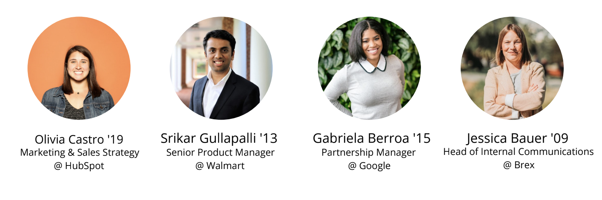

Tuesday, March 29th, 8-9 PM
Interested in a career in software engineering? About to start a software engineering job/internship and are unsure what to expect? Come and meet Colgate alumni who are now working in this field and ask any questions you might have in this Q&A-style panel!
Hosted by alumni:
Thursday, March 31st, 7-8 PM
What else is out there for non-engineers in the field of technology? Come and meet Colgate alumni working in diverse, non-technical roles at some of the largest tech companies!
Hosted by alumni:
